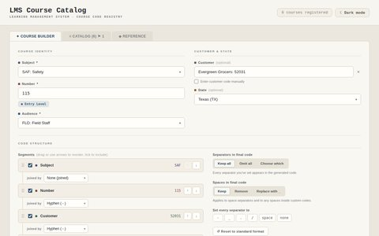
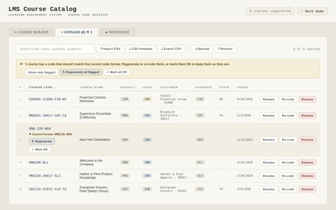
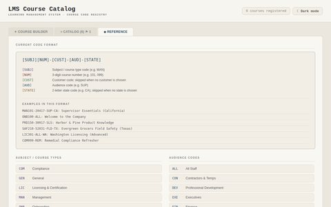
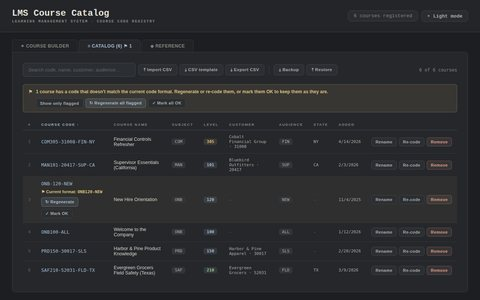

Tool · HTML / JavaScript (React)
LMS Course Catalog
One naming system for every course we build.
My team builds a wide range of e-learning: onboarding, compliance, safety, licensing, product knowledge, and management training, much of it tailored to a particular customer, audience, or state. Once a course library grows into the hundreds, names like “Safety Training (new) v2” stop telling anyone anything. So I built this tool to give every course a course code that says what it is at a glance, and to keep a searchable catalog of every code we've used.
A code is built from up to five parts. SAF115-52031-FLD-TX, for example, reads as
a safety course (SAF), number 115 (the 100s mean entry level), built for customer
52031, for field staff (FLD), in TX (Texas).
Anyone on the team can read it, sort by it, and find the right course in the LMS without opening it.
Every company, customer code, and course in this demo is made up. Anything you add stays in your own browser; nothing is sent anywhere.
Try it
This is the working tool, with a few sample courses already in the catalog. Build a code in the Course Builder tab, add it, then find it in the Catalog. Try reordering the code's parts too: the catalog flags any existing course that no longer matches.
Tip: on a small screen, the full-screen version has more room.
What it does
- Course Builder: pick a subject, a course number, an audience, and (if it applies) a customer and a state, and watch the code build itself in a color-coded preview, with each part labeled underneath. The number shows its level as you type (001 to 099 remedial, 100s entry level, up through 600+ for administrators). One click copies the code or the full catalog label.
- A format you can change: turn parts on or off, drag them into a new order, and choose what joins them (hyphens, underscores, periods, or nothing). If the team ever changes the convention, every existing course that no longer fits gets flagged, and each one can be regenerated in the new format, re-coded by hand, or marked OK as is.
- No duplicates: a code or a course name that's already taken can't be added twice, and the tool says why.
- Catalog: search across codes, names, customers, and audiences; sort any column; rename, re-code, or remove a course.
- Spreadsheets in and out: download a CSV template, fill it in Excel or Google Sheets, and import a whole batch at once, with a row-by-row preview that catches problems before anything is added. Export the catalog to CSV, or back up and restore everything as one file.
- Reference tab: the current format, worked examples, and every subject, audience, and level code in one place, so new team members can learn the system in minutes.
- Light and dark themes, remembered between visits.
Screenshots








How it's built
The whole tool is a single HTML file, so it can live on any web server, a shared drive, or a desktop. The interface is built with React, compiled right in the browser, so there's no build step and the source stays readable for whoever maintains it next. Courses are saved in the browser's own storage, and the CSV and backup files make it easy to share a catalog or move it to another computer.